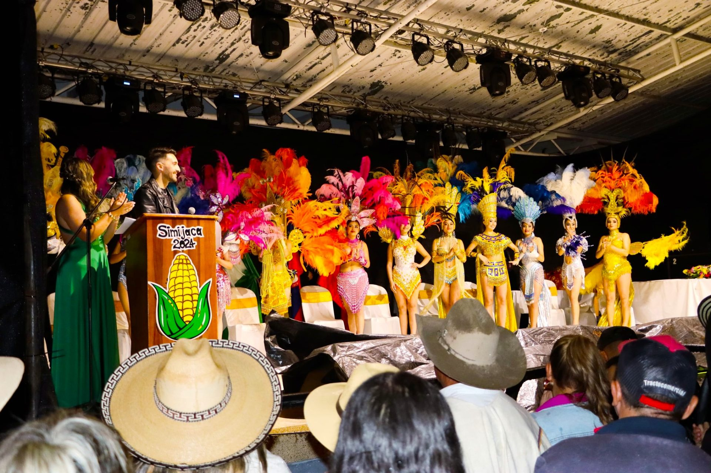
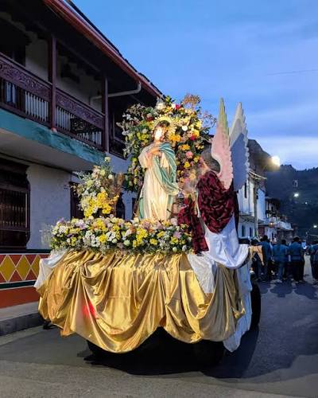

Ferias y Fiestas Anuales
Celebración municipal con orquestas en vivo, alboradas musicales y desfiles de carrozas por las calles principales.
Conoce las principales festividades anuales que reúnen el arte, la ganadería y el folclor simijense.

Celebración municipal con orquestas en vivo, alboradas musicales y desfiles de carrozas por las calles principales.
Jornada de juzgamiento bovino y muestra de emprendimientos agroindustriales representativos del sector lácteo.

Conmemoración religiosa y cultural con actos litúrgicos, procesiones y eventos comunitarios en el centro histórico.